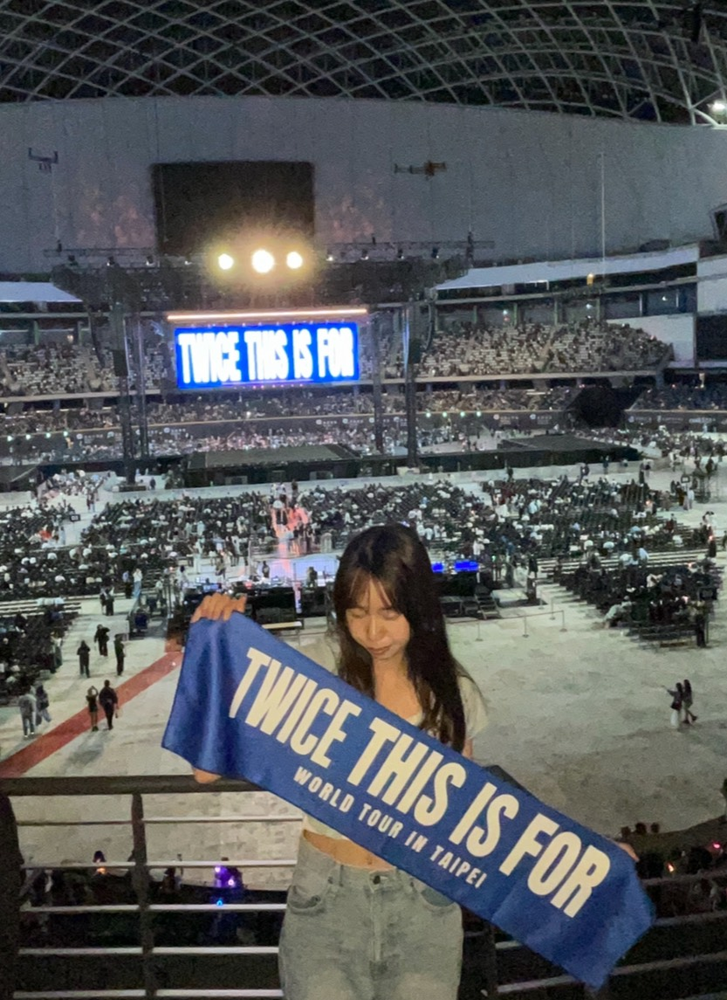
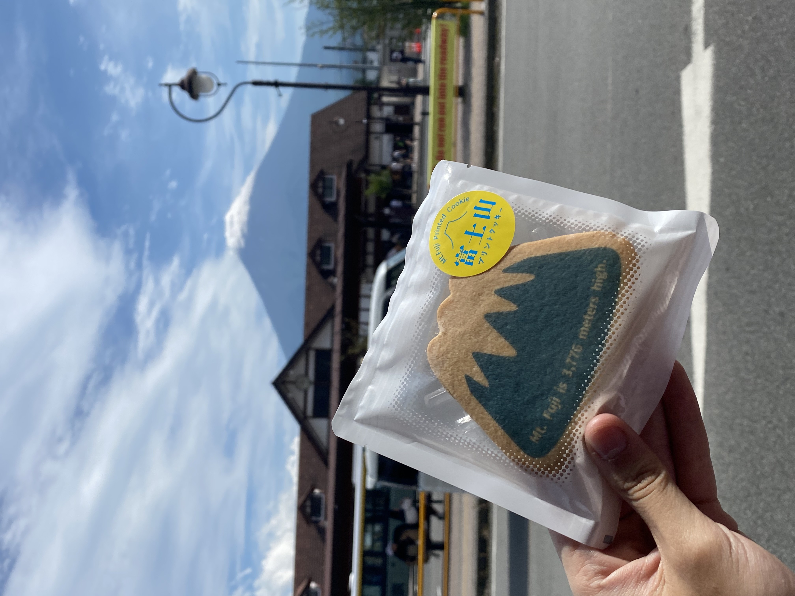

追星
我熱愛 K-POP 與 J-POP，這些音樂經常帶給我滿滿的能量。對我而言，參加演唱會不僅能舒緩疲勞，更能讓我重新獲得前進的動力。(點擊看更多)

旅行
我喜歡到各地探索，並透過拍照記錄沿途的風景與故事，為自己留下珍貴的回憶。
看看我平常喜歡做的事情

我熱愛 K-POP 與 J-POP，這些音樂經常帶給我滿滿的能量。對我而言，參加演唱會不僅能舒緩疲勞，更能讓我重新獲得前進的動力。(點擊看更多)

我喜歡到各地探索，並透過拍照記錄沿途的風景與故事，為自己留下珍貴的回憶。